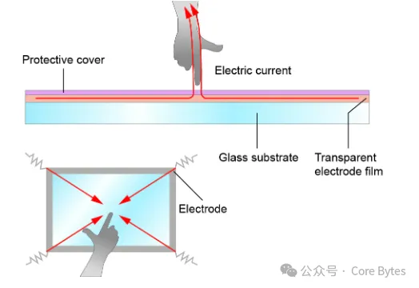
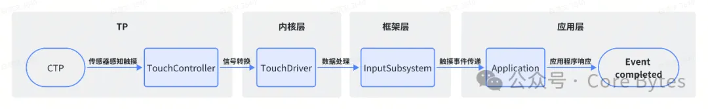

1. 概述
触摸屏作为现代交互设备中重要的输入方式之一，已广泛应用于手机、平板电脑、电脑显示器等设备中。本文档将从基础知识出发，介绍触摸屏的工作原理，包括传感器感知、信号转换、数据处理和触摸事件传递等关键步骤。接着，将介绍触摸屏的分类，包括电容式触摸屏、电阻式触摸屏等不同技术的特点和应用场景。随后，将探讨触摸屏的工作模式：Actvie/Idle/Sleep Mode，也包括单点触控、多点触控、手势识别等常见模式。本文档还将涵盖触摸屏在手机典型应用中的应用案例和特点。此外，还会介绍触摸屏常见的省电策略，功耗相关常见问题和解决方法，如防误触、双击亮屏、手势唤醒待机等。最后，将提供一些常见的调试方法，帮助用户解决触摸屏功耗相关的问题。
2. 触摸屏的分类
触摸屏根据其实现原理可分为：红外线触摸屏 、 外表声波触摸屏 、 电阻式触摸屏 、 电容式触摸屏 。现在市场上的电子产品主要以电容屏为主，接下会简单介绍一下每种触摸屏的实现原理和优缺点
| 触摸屏 | 含义 | 基本原理 |
| 红外线触摸屏 | 一种使用红外线传感器来检 测触摸操作的触摸屏技术 | 在触摸面板的边缘或角落处放置红外线发射器和接收器，通过检 测被触摸物体（如手指）引起的红外线被遮挡的情况来确定触摸 位置。 |
| 外表声波触摸屏 | 一种利用声波传播的原理来 检测触摸操作的触摸屏技术 | 使用超声波传感器在触摸屏表面产生一系列不可听见的声波，并 通过接收器检测被触摸物体引起的声波变化，从而确定触摸位置。 |
| 电阻式触摸屏 | 一种基于电阻原理的触摸屏 技术 | 由两层导电膜组成，当触摸屏表面被按压时，上下两层导电膜会 接触，形成电阻变化，通过测量电阻变化来确定触摸位置。 |
| 电容式触摸屏 | 一种基于电容效应的触摸屏 技术 | 由触摸面板上的一层电容传感器阵列组成，当手指或触摸物体接 近触摸面板时，会改变电容场分布，通过测量电容变化来确定触 摸位置。 |
| 触摸屏 | 适用范围 | 优缺点 |
| 红外线触摸屏 | 常见于公共信息查询设备、 交互展示屏、ATM机 | 优点：较高的精度和可靠性，适应室内和室外环境，不受光照 影响。 缺点：需要额外的红外线感应器，触摸屏表面容易受到污染， 需要定期清洁。 |
| 外表声波触摸屏 | 常见于信息亭、自助点餐机、 电子导览屏 | 优点：高透明度和可触摸性，对图像质量无损失，适用于大尺寸 触摸屏和高分辨率要求的应用。 缺点：较高的成本，对声波传播环境有一定要求。 |
| 电阻式触摸屏 | 常见于工业控制设备、POS机 、便携式终端 | 优点：较低的成本和良好的耐用性，对触控笔和手指均支持。 缺点：触摸屏表面需要一层特殊的电阻膜，可能会影响显示 质量和触摸感应的精度。 |
| 电容式触摸屏 | 广泛应用于智能手机、平板 电脑和其他触摸屏设备 | 优点：高灵敏度、高分辨率和多点触控支持，支持手指操作， 无需压力。 缺点：对外界干扰较敏感，可能会受到电磁干扰的影响，较高 的成本。 |
前面三种触摸屏的工作原理如图所示：
电阻式触摸屏（Resistive Touch Screen）
电阻式触摸屏最早问世，在20世纪70年代开始被广泛应用。它由两层柔性薄膜之间夹层一层透明导电物质组成。当屏幕被按压时，两层薄膜之间的导电物质接触，形成电阻变化，从而检测到触摸位置。
电容式触摸屏（Capacitive Touch Screen）
电容式触摸屏的基本原理早在20世纪就已经被发现，但是由于技术限制和成本问题，直到21世纪才开始流行起来。它利用触摸屏表面的电容变化来检测触摸输入。
红外线触摸屏（Infrared Touch Screen）
红外线触摸屏在20世纪80年代开始出现。它利用红外线传感器和发射器来创建一个红外线网格，当触摸发生时，被触摸的位置会阻挡红外线，从而被感应器检测到。
外表声波触摸屏（Surface Acoustic Wave Touch Screen）
外表声波触摸屏在20世纪90年代开始应用。它利用表面声波传输技术，在触摸屏上放置传感器和发射器，通过声波传播检测触摸位置。
现在的智能手机、平板等主要使用的是电容式触摸屏，因此以电容式触摸屏为例来介绍。
3. 电容式触摸屏
两个带电的导体相互靠近会形成电容。当手指触摸屏幕时，由于人体电场，手指和触摸屏会形成耦合电容，对高频电流来说，电容是直接导体，会影响电路整体的电容特性。手指从接触点吸走一个很小的电流。这个电流分别从触摸屏的四角上的电极中流出，并且流经这四个电极的电流与手指到四角的距离成正比，控制器通过对这四个电流比例的精确计算，得出触摸点的位置。
电容式触摸屏又分为表面电容式和投射式电容式两种类型。表面电容式触摸屏采用透明导电层覆盖在显示屏表面，通过感应人体电荷来检测触摸。投射式电容式触摸屏则在触摸屏上放置电容传感器，通过电场变化来检测触摸位置。
- 表面电容式

| 工作原理 | 表面电容式触摸屏使用一层透明导电物质（通常是氧化锡或氧化铟锡）覆盖在触摸屏表 面。当触摸发生时，人体或其他导电物体接触到触摸屏表面，改变了导电层上的电荷分 布。通过检测导电层上电荷分布的变化，触摸屏控制器可以确定触摸的位置。 |
| 优点 | 工作原理简单、价格低廉、设计的电路简单 |
| 缺点 | 透光率不均匀，存在色彩失真；均匀沉积的ITO会导致枕型失真；当温湿度改变时，环境 电场发生变化，会引起电容屏的不准确 |
- 投射电容式
投射电容式触摸屏又分为自感应电容式和互感应电容式两种类型。
自感应电容式
| 工作原理 | 自感应电容式触摸屏采用一层导电层（例如，ITO）作为触摸屏表面，当手指或其他导电 物体接触到触摸屏表面时，导电层上形成一个电容。触摸屏控制器通过测量导电层上的 电容变化来确定触摸位置和触摸操作。自感应电容式触摸屏使用一个电路来感应整个导 电层上的电容变化。 |
| 优点 | 扫描速度快（每个扫描周期只需要检测X、Y电极，通过X和Y的检测结果定位触摸位置） |
| 缺点 | 只能实现单点触摸，多点时有鬼点效应，环境变化较大时需要校准，抗干扰性能差 |
互感应电容式
| 工作原理 | 互感应电容式触摸屏在触摸面板上使用两层交叉的导电层，一层作为发送器（Tx层）， 另一层作为接收器（Rx层）。当手指或其他导电物体接触到触摸屏表面时，触摸位置 处的电容值发生变化。触摸屏控制器通过测量接收器层上的电信号变化来确定触摸位 置和触摸操作。互感应电容式触摸屏使用两个电路，一个用于发送信号，另一个用于 接收信号。 |
| 优点 | 多点触摸时无鬼点效应，无需校准，抗干扰性能较好，能够减少误触发和漂移问题。 |
| 缺点 | 扫描速度慢，次数高（每次扫描周期都要检测每一个X方向的电极与Y方向的所有电极之 间的电容，总共需要扫描X乘以Y次） |
现在常用的触摸屏都是自感与互感结合，先进行自感扫描如果需要再进行互感扫描，这样可以减少扫描时间和芯片负担。
4. 基本工作流程
触摸屏的本质是传感器，它由触摸检测部件和控制器组成。检测部分安装在显示屏上面，用于检测用户触摸的位置，然后将触摸信息传给控制器；控制器将其转化为触点坐标传给CPU，同时触摸屏控制器能接收CPU发来的信息，做相应的处理。
Android触摸屏的工作原理可以简单概括为以下几个步骤：

传感器感知触摸：触摸屏通常由一层透明的电容层或压力敏感层组成。当用户触摸屏幕时，这些传感器会感知到触摸输入，并将其转换为电信号。
信号转换：接下来，触摸屏控制器会将感知到的电信号转换为数字信号。这个过程涉及信号放大和模数转换，将连续的电压变化转换为数字值。
数据处理：处理器或控制器会对转换后的数字信号进行处理和解析。它会根据触摸屏的类型和工作原理，确定触摸的位置、压力等信息。
触摸事件传递：处理器将解析后的触摸数据传递给操作系统，通常通过输入子系统。操作系统会根据触摸事件的信息，比如触摸的位置和动作（点击、滑动等），进行相应的处理。
应用程序响应：操作系统将触摸事件传递给当前活动的应用程序。应用程序可以根据触摸事件进行相应的处理，比如触发相应的操作或交互。
需要注意的是，Android触摸屏的具体工作原理会因触摸屏的类型和技术有所不同，常见的触摸屏技术包括电容式触摸屏、电阻式触摸屏、表面声波触摸屏等。不同的技术使用不同的传感器和算法来感知触摸输入，但基本的工作流程是类似的。
5. 工作模式
5.1 触控IC的三种工作模式
以某款市面常见的触控IC为例，触控IC（GTP）有三种工作模式，分别为 Active mode， Idle mode 以及 Sleep mode。

Active Mode
GTP 在 Active mode 时，会按照已设定的驱动信号频率、刷新率等参数在有触摸或无触摸未超时状态，可进行正常的坐标上报或数据上报。芯片的工作状态完全由软件配置决定。
Idle Mode
低功耗模式，在一定的时间没有检测到手之后，通过调整打码方式来降低 IC 功耗。
Sleep Mode
Active 模式时，主控通过下发命令使 GTP 进入 Sleep mode。当需要 GTP 退出 Sleep mode 时，
主控复位唤醒 GTP，唤醒后 GTP 将进入 Active mode。下发 Sleep 命令与唤醒之间的时间间隔要求大于 100ms。
5.2 不同工作模式下的功耗
触控IC的供电主要由两路供电组成：AVDD和DVDD
工作条件：环境温度为 25℃， AVDD=3.3V， DVDD=1.8V ， VDDIO=1.8V
参数 | 最小值 | 典型值 | 最大值 | 单位 |
AVDD | 2.7 | 2.8/3.0/3.3 | 3.4 | V |
DVDD | 1.65 | 1.8 | 1.95 | V |
VDDIO | - | 1.8 | - | V |
电源纹波 | - | - | 100 | mV（peak-to-peak） |
工作温度范围 | -20 | 25 | 85 | ℃ |
以下数据是datasheet里面提供的不同工作模式下的功耗典型值。（注：数据仅供参考，只提供了120hz报点率下的功耗参考）
| 参数 | 最小值 | 典型值 | 最大值 | 单位 |
|---|---|---|---|---|
| Active Mode AVDD 工作电流@120hz | - | 8 | - | mA |
| Idle Mode AVDD 工作电流@120hz | - | 1 | - | mA |
| Sleep Mode AVDD 工作电流 | - | 14 | - | uA |
| Normal Mode DVDD 工作电流@120hz | - | 8 | - | mA |
| Idle Mode DVDD 工作电流@120hz | - | 1 | - | mA |
| Sleep Mode DVDD 工作电流 | - | 33 | - | uA |
6. 关键参数
参数 | 含义 |
Accuracy | 各种情况下的精度（手指、薄手套、厚手套模式、触控笔下） |
Linearity | 横、竖、对角线滑动时的线性情况（特定滑动速度等条件下的） |
Jitter | 各种情况下的抖动，即滑动偏差 |
Scan Period | 扫描周期 |
Sampling Rate | 采样率 |
Reporting Rate | 报点率 |
Automatic Calibration | 自动校准 |
Clicking Sensitivity | 点击的灵敏度 |
Drawing Sensitivity | 拉伸的灵敏度 |
Water rejection | 水滴对touch电容特性的影响 |
Noise rejection | 充电器（大电流）对touch电容特性的影响 |
Response time | 响应时间，包括从Sleep Mode to Active Mode和从Idle Mode to Active Mode |
Tracking finger separation | 两个手指滑动时，两个手指之间最小能区分开的距离 |
在触摸屏相关的领域，存在着扫描周期、采样率和报点率这三个概念，它们有一些区别和联系。
| 参数 | 含义 | 区别和联系 |
| 扫描周期 | 触摸屏控制器在一个周期内完成 对触摸输入的扫描操作的时间间隔。 | 扫描周期决定了触摸屏硬件对触摸输入进行采样的频率，而采样率 表示在一个扫描周期内进行了多少次采样操作。 |
| 采样率 | 触摸屏控制器在一个扫描周期内对 触摸输入进行采样的次数。 | 采样率和报点率都对触摸屏的精度和响应性产生影响。较高的采样率 和报点率可以提供更准确和实时的触摸输入。 |
| 报点率 | 触摸屏向系统报告触摸事件的频率， 即触摸屏将采样到的触摸数据传递 给系统的速率。 | 报点率是触摸屏向系统报告触摸事件的频率，它受到扫描周期和采样 率的影响。较高的扫描周期和采样率通常会导致较高的报点率。 |
扫描周期（Scan Cycle）
扫描周期是指触摸屏控制器在一个周期内完成对触摸输入的扫描操作的时间间隔。它表示触摸屏硬件对触摸输入进行采样的频率，通常以赫兹（Hz）为单位表示。较短的扫描周期意味着触摸屏控制器更频繁地扫描触摸输入，可以提供更高的采样率。
采样率（Sampling Rate）
采样率是指触摸屏控制器在一个扫描周期内对触摸输入进行采样的次数。它表示触摸屏硬件对触摸输入进行测量的频率，通常以赫兹（Hz）为单位表示。较高的采样率意味着触摸屏硬件更频繁地测量触摸输入，可以提供更高的精度和灵敏度。
报点率（Reporting Rate）
报点率是指触摸屏向系统报告触摸事件的频率，即触摸屏将采样到的触摸数据传递给系统的速率。它表示触摸屏硬件向系统发送触摸事件的次数，通常以报告次数（Reports per Second）为单位表示。较高的报点率意味着触摸屏向系统提供更实时和准确的触摸事件信息。
7. 典型应用
常见的触摸屏技术：电阻式、表面电容式(surface capacitive touch panel)、投射电容式(project capacitive touch panel)、电磁式等等，如今应用于手机、平板产品的主要是投射电容式、电磁式(主要突出的是手写笔功能,如三星的GalaxyNote系列)。
目前生产触控IC的厂家有新思、赛普拉斯、ATMEL、敦泰、汇顶、奕力、义隆、晨星、美发思、矽创等。
国内的模组厂有欧菲、信利、胜华、帝晶、华意、TPK、合力泰、超声、创维等。
7.1 常见触摸操作
| 模式 | 含义 | 适用范围 |
| 单点触控 | 在触摸屏上只能检测到一个触摸 点的操作 | 适用于简单的操作需求，如选择、点击或滚动等。 |
| 多点触控 | 在触摸屏上可以同时检测到多个 触摸点的操作 | 用户可以使用多根手指在触摸屏上进行同时触摸、滑动、捏合、 旋转等操作 |
| 手势识别 | 通过分析用户在触摸屏上的手势 动作来进行识别和响应的技术 | 手势可以是单点触摸或多点触摸的组合，如滑动、捏合、 旋转、双击等 |
单点触控（Single Touch）
单点触控是最基本和最常见的触摸屏工作模式。在单点触控模式下，触摸屏只能感知到单个触点，即一次只能检测到一个位置的触摸。当用户用手指或触控笔接触屏幕时，触摸屏会识别触点的位置，并将其转化为相应的操作，如点击、滑动等。
多点触控（Multi-Touch）
多点触控模式允许触摸屏同时感知和跟踪多个触点。这意味着用户可以用多个手指或触控笔在屏幕上进行操作。多点触控模式为更复杂的手势操作提供了支持，如缩放、旋转、双指滑动等。触摸屏会跟踪每个触点的位置和动作，并将其转化为相应的操作指令。
手势识别（Gesture Recognition）
手势识别是在多点触控的基础上，通过分析和识别手指或触控笔的运动模式和轨迹来识别特定的手势动作。手势可以是简单的，如单击、双击、长按，也可以是复杂的，如滑动、缩放、旋转等。触摸屏通过算法和模式识别技术，将用户的手势动作转化为相应的操作指令，从而实现更丰富和直观的交互体验。
7.2 手机常见功能
| 常见功能 | 特点 | 区别 |
| 防误触 | 旨在减少意外触摸或误触引起 的误操作。 | 主要关注的是减少误操作，例如在设备放在口袋中或触摸屏靠近 面部时，避免意外触发屏幕上的操作。 |
| 双击亮屏 | 允许用户通过快速双击屏幕来 唤醒设备的屏幕或将其从待机 状态切换到活动状态 | 主要用于快速唤醒屏幕，以便用户能够方便地查看或响应设备上 的信息，而不需要按下物理按钮或使用其他手势。 |
| 手势唤醒 | 允许用户使用预定义的手势 或动作在设备休眠或屏幕关闭 状态下唤醒设备。 | 提供了更多的灵活性，用户可以通过特定的手势或动作来自定义 唤醒设备的方式，以满足个人偏好或方便操作。 |
防误触功能
防误触功能旨在减少或避免在触摸屏上发生意外触摸操作。由于触摸屏可能会被意外的手指接触或其他物体触碰，防误触功能通过一系列算法和策略来识别并区分意外触摸和真实的用户操作。常见的防误触功能包括屏幕灵敏度调节、手掌识别、触摸抑制等，旨在提高用户的操作准确性和体验。
手机解锁时遮挡屏幕时触发防误触提醒，如下图所示
双击亮屏功能
双击亮屏功能是一种方便的操作方式，允许用户通过在触摸屏上快速连续地双击，将设备的屏幕从休眠状态唤醒。这样用户无需按下物理按键或使用其他复杂的操作来开启设备屏幕，提供了更快速、直观的亮屏体验。双击亮屏功能在许多智能手机和平板电脑等设备中得到广泛支持，并可以在设备设置中进行配置和启用。
手机双击亮屏功能开关，如下图所示
手势唤醒功能
手势唤醒功能允许用户使用特定的手势动作来唤醒设备屏幕，而无需按下物理按键。用户可以在设备休眠状态下，在触摸屏上执行预定义的手势，如双击、画字母等，以激活设备并亮屏。手势唤醒功能通过使用传感器和模式识别技术，识别和解释用户手势的意图，并触发相应的操作。这种功能提供了更便捷的操作方式，使用户能够快速访问设备功能，如查看通知、启动应用程序等。
手机手势唤醒功能，如下图所示
8. 功耗问题及对应策略
常见的功耗问题：
- 开启手势功能（双击亮屏/手势唤醒）后待机功耗
- 亮屏下单指点击、滑动、长按屏幕的功耗
- 亮屏下多指点击、滑动、长按屏幕的功耗
常见的省电策略：
- 针对不同场景需求，适当降低报点率
- 缩短TP从active恢复idle时间
- 延长TP扫描周期
- 限制Touch boost场景下CPU的调度和频率
- 提高电源供电效率
- 降低active模式下的工作电流
- 非用即关，外设器件休眠下电（厂商一般不建议休眠下电）
8.1 降低TP报点率（采样率）
亮灭屏下两个参数含义是一样，配置稍有点不一样，报点率（采样率）越高，所需要的功耗代价也越高，和竞品机对比时也可以考虑平衡这个参数配置。
查看方法：adb shell getevent -lrt,最右侧的就是TP的报点率
常见的报点率有这几个挡位：60hz 90hz 120hz 180hz 240hz 480hz，因为游戏场景对于触控体验的实时性要求比较高，所以游戏场景的TP报点率一般是480hz，非游戏场景下的TP报点率一般是120hz或者180hz，开启手势模式的待机场景下一般是90hz或者120hz。一般情况下为了避免卡顿丢帧，触摸屏的报点率都要高于当前屏幕的显示刷新率。
在有功耗板下可以测试TP不同报点率下的功耗数据，为整机功耗优化提供数据依据和支持。以120hzTP报点率下的功耗测试为例，也可以通过实测各路供电消耗的实际电流和厂商提供的典型值进行对比，检查不同报点率下的功耗数据是否符合要求。
| 触控功耗测试 | |||||||
| 电源 | 报点率 | 工作状态 | 工作电流 | 实测 | 单位 | ||
| Min | Typ | Max | |||||
| AVDD | 120Hz | Active | mA | ||||
| Idle | mA | ||||||
| Sleep | uA | ||||||
| DVDD | 120Hz | Active | mA | ||||
| Idle | mA | ||||||
| Sleep | uA | ||||||
| *参考数据依据不同芯片类型变化 | |||||||
8.2 减少Active持续检测时长
触摸屏的 Active 持续检测时长是指触摸屏不断地进行触摸检测的能力。这个时长取决于触摸屏的硬件和驱动程序的设计。对于在无触摸或者触摸状态下Active Mode切到Idle Mode的时间，不同触控IC厂商设置的都不太一样，需要兼顾效果体验和功耗，但是理论上TP从active状态恢复到idle状态的时间越快，器件耗电越低。
以遇到的功耗问题为例：开启手势唤醒功能后待机，长按屏幕测试一段时间的功耗，整机功耗要差于竞品机。
竞品机的active持续时长（2.5秒）如下图所示：
对比机的active持续时长（5秒）如下图所示：
解决方法：只修改了灭屏下触摸时TP从active恢复到idle的时间（5秒改成2.5秒），亮屏下体验效果优先还是保持5秒持续active检测时间。还有可以优化的部分是Active Mode下的工作电流。
8.3 延长TP扫描周期
在待机休眠时，可以适当延长触摸屏的扫描周期，让触摸屏控制器减少扫描触摸输入的频率，可以节省待机功耗。
以遇到的功耗问题为例：开启手势唤醒功能后待机，测试一段时间的平均功耗，整机功耗要差于竞品机。
竞品机的扫描周期（1.5秒）如下图所示：
对比机的扫描周期（1秒）如下图所示：
解决方法：延长对比机的扫描周期，和竞品机保持一致，并同步评估效果体验影响。
8.4 降低灵敏度
初始化校准
不同的温度、湿度及物理空间结构均会影响到电容传感器在闲置状态的基准值， 触控IC会在初始化的 200ms 内根据环境情况自动获得新的检测基准，完成触摸屏检测的初始化。
自动温漂补偿
温度、湿度或灰尘等环境因素的缓慢变化，也会影响到电容传感器在闲置状态的基准值。触控IC实时检测各点数据的变化，对历史数据进行统计分析，由此来修正检测基准。从而降低环境变化对触摸屏检测的影响。
如果在触摸屏的灵敏度调节过程中，灵敏度设置的越高，TP越容易受到环境干扰。灭屏待机时容易受到微小环境干扰，触控IC做自校准导致功耗增加。
以遇到的功耗问题为例：在长待机功耗测试中，高概率出现周期为11ms左右，频率90hz左右，峰值为60mA的周期性波形，且波形持续存在，经过较长时间才会消失，目前看到最近一次波形35分钟左右会消失。该周期性波形抬高了长待机的平均电流，导致功耗增加。此时AP和子系统均正常休眠，功耗板复现问题从电流拆解来看该波形来自TP器件。
如下是待机进入异常的波形图
解决方法：略微降低灵敏度值以及在进入Idle Mode前进行校准，避免待机休眠后触摸屏受到微小干扰后一直处于自校准状态。
9. 功耗debug方法
- 通过分析电流波形图，检查当前TP的工作模式和状态
- 通过功耗拆解板对TP器件进行电流拆解
- 通过读取TP的状态寄存器信息来确认，TP是否处于正确的工作状态，这里主要包含了报点率、采样率等
- 可以通过WiFi adb的方式模拟触摸动作，进行问题拆解
- 待机场景下可以动态移除TP驱动，对比移除前后的波形和整机功耗来检查是否有功耗异常
- 检查GPIO配置是否合理，防止配置不当导致漏电
This is copyright.